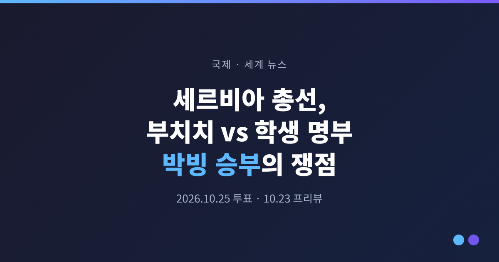
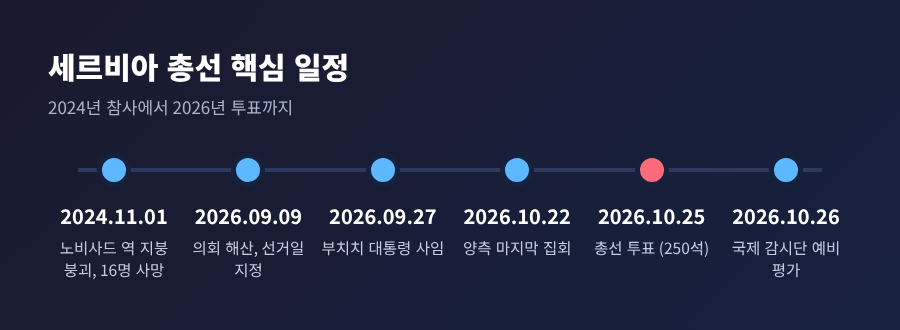
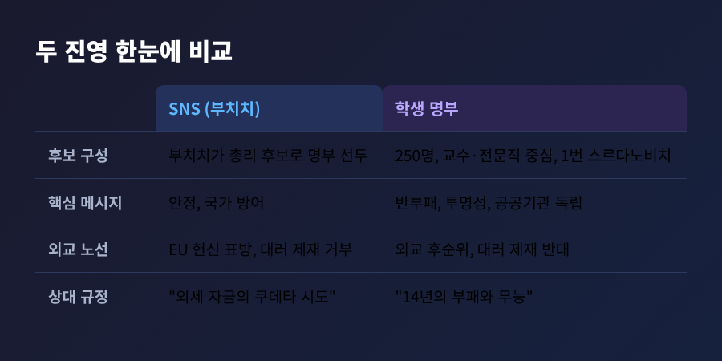
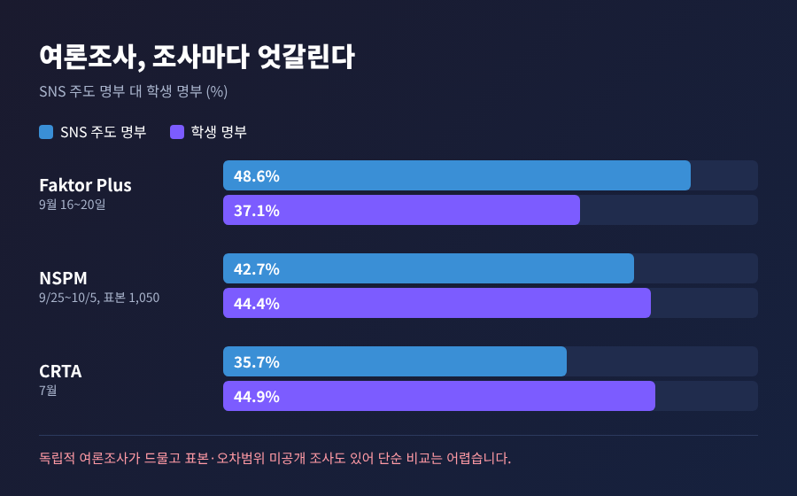
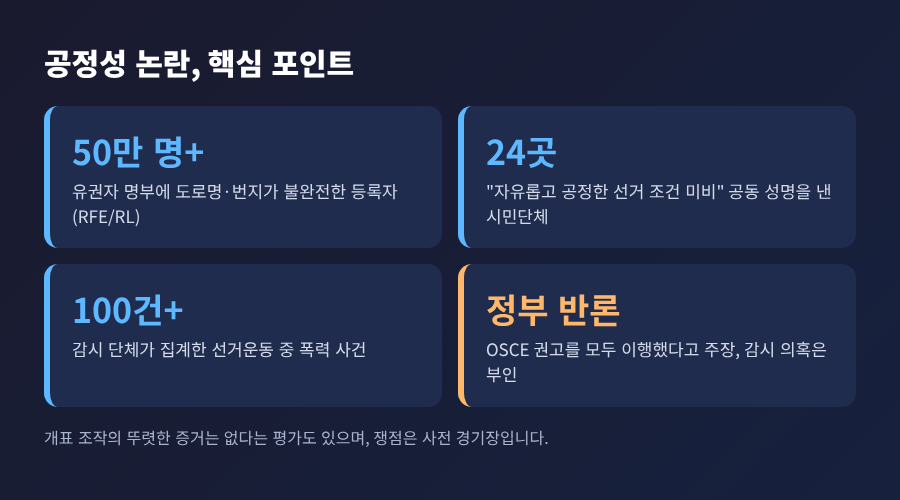
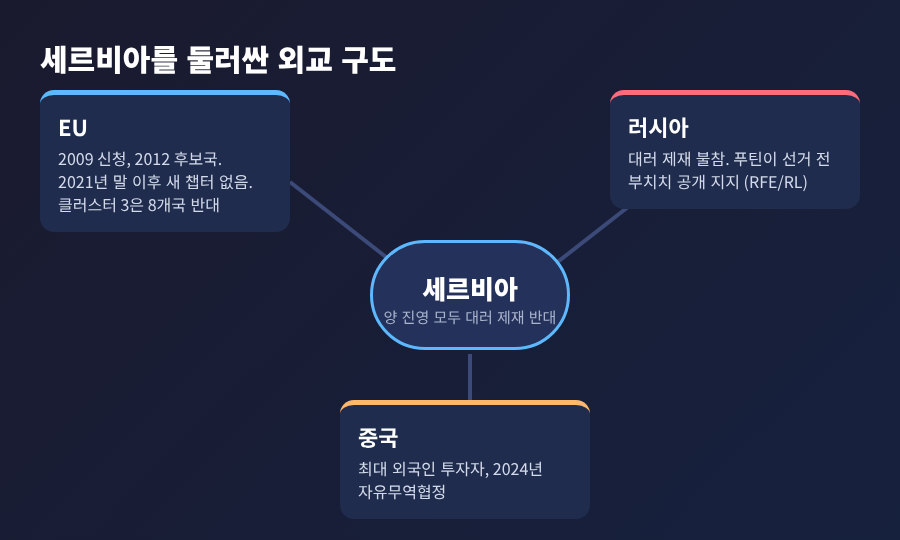
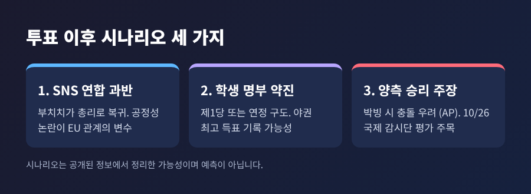

3줄 요약
오늘은 투표를 이틀 앞둔 세르비아 총선의 구도를 정리해 보려 합니다. 정부 측과 야권 측 주장을 나란히 놓고, 확인된 사실과 확인되지 않은 부분을 구분해 적겠습니다. 기준 시점은 2026년 10월 23일입니다.
알렉산다르 부치치는 9월 27일 대통령직을 사임했습니다. 두 번째이자 마지막 임기를 스스로 접은 것입니다. 헌법상 3선은 불가능하니, 의회 다수를 확보해 총리가 되겠다는 계산으로 읽힙니다. 총리는 그가 2012년부터 2017년까지 지낸 자리입니다.
대통령 직무는 측근인 안나 브르나비치 의회 의장이 대행합니다. 부치치는 사임 직전 49명을 사면했고, 이 가운데 23명은 시위와 관련해 유죄 판결을 받은 사람들이었습니다.
선거는 250석 규모의 의회를 새로 구성하는 투표입니다. 후보 명부는 18개입니다. 사실상 승부는 부치치의 세르비아 진보당(SNS)과 학생 명부의 양강 구도입니다. 등록 유권자는 약 645만 명으로 집계됩니다.

첫째, 한 사람이 14년 동안 쥐어 온 권력이 처음으로 진짜 시험대에 올랐습니다. 이번 선거를 두고 유럽의회 세르비아 담당 보고관을 지낸 블라디미르 빌치크는 10년 넘게 중에서 결과가 가장 불확실한 선거라고 평가했습니다.
둘째, 거리의 시위가 표로 바뀔 수 있는지 가늠할 사례입니다. 생활비와 공공서비스에 대한 불만이 유럽 곳곳에서 터지는 때여서, 결과는 세르비아 밖에서도 읽힐 것입니다.
셋째, 발칸의 안정과 EU의 확대 정책이 걸려 있습니다. 세르비아는 서발칸 최대 경제국이고, 코소보·보스니아의 세르비아계 주민과 얽힌 지역 정세의 한복판에 있습니다.
출발점은 2024년 11월 1일입니다. 노비사드 철도역의 개보수된 콘크리트 지붕이 무너져 16명이 숨졌습니다. 중국 기업이 참여한 대표 사업이었고, 건설 과정의 부패 의혹이 제기되면서 시위가 전국으로 번졌습니다. 정부는 부패 의혹 보도를 부인해 왔습니다.
시위는 거의 2년 동안 이어졌습니다. 학생 주도 집회에 수십만 명이 모인 적도 있고, 2000년 밀로셰비치 퇴진 이후 최대 규모라는 평가가 나옵니다. 시위대는 부패와 불투명성, 국가기관에 대한 정치 개입을 문제 삼습니다. 부치치와 측근들은 이를 부인합니다.
예전엔 거리에서 구호를 외치던 학생들이었습니다. 지금은 250명의 후보 명부를 직접 꾸려 선거에 나섰습니다. 9월 15일 공개된 명부의 1번은 노비사드 의대 교수이자 심장내과 의사인 일리야 스르다노비치입니다. 후보 대부분이 교수와 전문직이고, 학생들은 "새 지도자를 세워 개인숭배를 만들 생각이 없다"고 밝혔습니다. 스르다노비치가 자동으로 총리가 되는 구조도 아니라고 합니다.
공약의 중심은 반부패입니다. 부정 축재 재산 조사, 공공기관 정치 개입 제한, 공공지출 투명성 확대를 내세웠습니다.

정부 측은 안정과 국가 방어를 앞세웁니다. 부치치는 학생 운동을 외세 자금이 들어간 쿠데타 시도라고 반복해서 규정해 왔습니다. 10월 22일 집회에서도 "그들이 우리 국가를 무너뜨리려 했음을 잊지 말자"고 말했습니다. 검찰은 선거일 폭력과 폭동을 모의한 혐의로 체포된 6명을 조사했습니다. 한편 부치치는 CNN 인터뷰에서 야권이 이기면 결과를 받아들이고 당일 저녁 축하 인사를 건네겠다고 밝혔습니다.
야권 측은 14년의 부패와 무능을 끝내자고 호소합니다. 같은 날 열린 마지막 집회에는 슬라비야 광장에 수만 명이 모였습니다. 일본 타임스는 헤드라인에서 약 15만 명이라고 전했으나, 본문을 확인하지 못해 집회 규모는 매체별 추정이 엇갈린다고만 적어 둡니다.
여론조사를 어떻게 읽을지도 쟁점입니다. 독립적이고 믿을 만한 조사가 드물고, 결과 편차가 큽니다.
| 조사기관 | 시점 | SNS 주도 명부 | 학생 명부 |
|---|---|---|---|
| Faktor Plus | 9월 16~20일 | 48.6% | 37.1% |
| NSPM | 9월 25일~10월 5일(표본 1,050) | 42.7% | 44.4% |
| CRTA | 7월(정확한 현장 시점 미확인) | 35.7% | 44.9% |

표본과 오차범위가 공개되지 않은 조사도 있어 단순 비교는 위험합니다. 예측시장 Kalshi에서는 10월 22일 기준 SNS 주도 명부 승리 66%, 학생 명부 28%로 거래됐습니다. 다만 이는 베팅 가격일 뿐 여론조사가 아닙니다. 투표율도 변수입니다. 이탈리아 국제정치연구소(ISPI)의 조르조 프루시오네는 낮은 투표율이 여당에 크게 유리하다고 분석했습니다.
야권과 시민단체는 선거 환경 자체가 기울어졌다고 주장합니다. 24개 시민단체는 이번 주 '자유롭고 공정한 선거 조건이 갖춰지지 않았다'는 공동 성명을 냈습니다. 감시 단체는 선거운동 중 폭력 사건 100건 이상을 집계했습니다.
RFE/RL이 짚은 쟁점은 구체적입니다. 유권자 명부에 도로명과 번지가 없는 등록자가 50만 명을 넘고, 사회복지센터 같은 공공시설에 수백 명이 등록된 사례도 있습니다. 이웃 나라 주민이 세르비아 주소로 등록됐다는 의심도 나옵니다. 코소보의 세르비아 지원 기관 직원 4명은 여당 투표를 압박받았다고 익명으로 증언했습니다. 정부는 2023년 선거 이후 OSCE 권고를 모두 이행했다고 주장하지만, OSCE 중간보고서는 이와 배치된다고 이 매체는 전합니다. 보고서 원문은 이번에 확인하지 못했습니다.
감시 의혹도 있습니다. 시민단체 SHARE와 토론토대 연구진은 올해 최소 16건의 페가수스 스파이웨어 사용 사례를 보고했고, 야권은 당국을 지목합니다. 정부는 이를 부인합니다.
균형을 위해 덧붙이면, 유럽 서발칸 전문 매체는 야당과 감시단도 개표 조작의 뚜렷한 증거는 아직 없다고 본다고 정리했습니다. 문제 제기의 초점은 개표보다 사전 경기장입니다.

세르비아는 2009년 EU 가입을 신청했고 2012년 후보국이 됐습니다. 지금까지 협상 챕터 22개가 열렸지만, 2021년 말 이후 새 챕터는 열리지 않았습니다. 7월에는 클러스터 3 개시를 두고 27개국 중 8개국이 반대한 것으로 전해졌습니다. 이유는 법치 문제와 대러 제재 불참입니다. 유럽의회가 채택한 확대 보고서에서는 찬성 468, 반대 116, 기권 79가 나왔고, 보고관은 상황이 악화되고 있다고 평가했습니다. 반대로 집행위는 개시를 다시 권고했습니다.
부치치는 EU 경로에 헌신한다고 말하면서도 대러 제재 동참은 거부합니다. 푸틴이 선거 전 부치치를 공개 지지했다고 RFE/RL은 전합니다. 5월 베이징에서는 시진핑을 만나 EU가 외교 상대의 허용 목록을 만들려 한다고 비꼬았습니다. 중국은 세르비아 최대 외국인 투자자이며, 2024년 체결된 자유무역협정으로 관세 인하가 진행 중입니다.
학생 명부는 외교를 후순위로 두었습니다. 러시아 제재에는 반대하고 코소보 독립 불승인 입장을 지지합니다. 그래서 누가 이기든 서방이 기대하는 급격한 노선 전환은 어렵다는 관측이 가능합니다. 이는 확정된 사실이 아니라 현재 공개된 입장에서 끌어낸 추정입니다.

시나리오는 크게 셋입니다. SNS 연합이 과반을 얻어 부치치가 총리가 되는 경우, 학생 명부가 제1당이 되거나 연정 구도를 짜는 경우, 양쪽이 모두 승리를 주장하며 대치하는 경우입니다. AP는 박빙 구도에서 양측이 승리를 선언하면 충돌이 우려된다고 전했습니다.

결과 발표 일정도 알아 둘 만합니다. 10월 26일(월) 벨그라드에서 ODIHR, 유럽의회, OSCE 의회총회, 유럽평의회 의회총회 대표단이 공동 예비 평가를 내놓을 예정입니다. 이 평가가 선거 신뢰성을 두고 어떤 표현을 쓰는지가 이후 EU와의 관계를 가를 것입니다.
정리하면 이렇습니다. 이번 선거는 누가 몇 석을 얻느냐보다, 결과를 양쪽이 어떻게 받아들이느냐에서 더 큰 의미를 갖게 될 수 있습니다.
"이긴 쪽이 누구인가보다, 진 쪽이 승복하는가가 남는 문제다." 저는 이 한 줄이 이번 투표의 진짜 시험이라고 생각합니다.
일요일 밤, 개표 속보 앞에서 가장 오래 남을 장면은 숫자가 아니라 상대에게 건네는 첫 마디일지도 모릅니다.